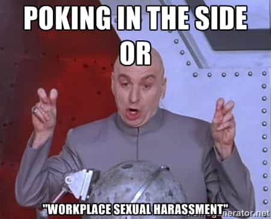
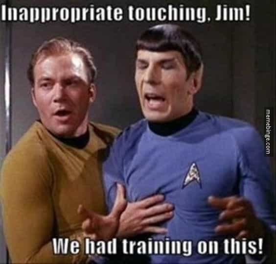

"You know, walk the earth, meet people... get into adventures."


A man is beholden to the circles within which he moves. We are all obligated to obey the laws of our societies, and we are sometimes bound by additional rules of groups within society as well. Whether that be your social organization, your school, or your place of work, behavior within the law, but outside the code of these places, can get you into serious trouble.
Sexual harassment is one of those acts, and today we’ll talk about what you can do and should do if you are accused of sexual harassment at work.
Sexual harassment is defined as:
Unwelcome sexual advances, requests for sexual favors, and other verbal or physical conduct of a sexual nature when:
- Submission to such conduct is made either explicitly or implicitly a term or condition of an individual’s employment, or
- Submission to or rejection of such conduct by an individual is used as a basis for employment decisions affecting such individual, or
- Such conduct has the purpose or effect of unreasonably interfering with an individual’s work performance or creating an intimidating, hostile, or offensive working environment.
There’s a list of some 56 different things that can be defined as sexual harassment, and we could spend the entire article talking about what is, and what is not, sexual harassment, but a working red pill definition is “anything that is unwelcome to someone based on sexuality.” The key word is “unwelcome;” in order for sexual harassment to actually be illegal, it has to either create a “hostile work environment” or result in something adverse happening to the victim, like being demoted or fired.
Neither of these conditions are cut and dried. Your employer, having received a complaint from a woman against you, might not wait for a court of law to determine that a hostile work environment exists because of your actions and may just fire you out of hand, especially if you are in a US “right to work” state (where you can be fired for any reason at any time.)
Similarly, adversity to an employee is also not always strictly defined; I just got demoted and a female co-worker promoted in our company’s reorganization into the spot I should have had, but I have no recourse, being a man, as it doesn’t fit the narrative for a man to be a victim of corporate discrimination over sex.

Now that we have as precise of a handle on what it is, let’s make a plan for dealing with an accusation of sexual harassment.
The first thing you have to decide is whether or not you want to keep your job. With many corporations being required to only say “Yes, he worked here from X to Y” because they are so scared of lawsuits, getting fired for sexual harassment may have no different effect from being laid off, because your references won’t be able to say anything differently. The upshot of this is to decide how happy you are with your job, and how acceptable the idea of changing jobs is to you then and there.
I see three situations. You can give not one single rat’s ass if you keep your job or not; you can view keeping your job as essential, or you can take it or leave it depending on the outcome of this harassment complaint. This is the first point in determining your strategy.
Sexual harassment is often punished without proof. It is literally “he said; she said” a lot of the time. If there is no evidence (like emails or texts) or if there are no witnesses; it’s going to be a lot easier to cast doubt on if anything at all actually happened than if someone witnessed it and is backing the complainant up, or if she’s whipping out the dick pic you texted her work phone. Evidence and witnesses are going to be the second point in your strategy.

Did anyone hear you say this?
So far, I have yet to hear of much cyber-framing going on with people doctoring up emails and the like to turn you in. This is, incidentally, the biggest reason to lock your damn computer whenever you get up from it, it’s very easy to send an email from your account, from your computer, that will ruin your career before you can get back from taking a piss.
The main problem is going to be false witnesses. If you’re being set up for the fall, if whoever saw it go down is a friend of the complainant, she’ll say whatever the two of them cook up together and you will now have to fight them both.
That same co-worker I mentioned above has a torture survivor’s flinch to being touched. She’s yelled at me before for tapping her on the arm when I’m trying to get her attention in a meeting on the floor because I need something, after calling her name multiple times. While I have done the safe thing and already relayed this behavior to my manager just in case she pulls anything in the future, my point in this example is that tapping someone on the shoulder is not sexual harassment and can be explained away by showing that this is behavior commonly accepted in society and that she’s neurotic.

There’s a difference for being taken to task for slapping a chick on the ass versus asking her out on a date and causing her to be offended by your temerity. What actually went down is the third point in your strategy.
Chances are, the first you’ll learn of this is at a meeting where they will haul you in and shock you with the fact that you are being investigated for sexual harassment. Harassment is one of those odd things that is illegal only if proven to cause all that stuff written at the start of the article, so it isn’t illegal before it is proven by court. However, it is also one of the only not-explicitly illegal acts that can get you immediately fired. Most big companies have some sort of “penalty volcano” with escalating punishments for repeated infractions, but sexual harassment can be a one-and-done sort of thing.
First thing you must do is shut up, do not say anything that will incriminate you. You, unfortunately, do not yet have the right to remain silent, but you do have the right to control what you say. If the HR people say “It was said you touched her intimately,” you do not say “I touched her on the shoulder,” because they will then bust you for touching her at all. Instead, just deny whatever is said; “I did not touch her intimately.” Don’t admit to anything, every sentence should be “I did not do X.”

Second thing is lawyer up with an employment lawyer. Ask to stop the meeting so that you can arrange representation. If they claim you will not need a lawyer and it can be handled internally and will not let you go get one, sit through the rest of the meeting then go get one that day anyway.
Follow your lawyer’s advice; it could well be that, by getting a lawyer, your company will back off and try to make it all go away. In that event, the lawyer may get your HR department to give you a letter stating that you are under no investigation for this alleged incident by threatening a defamation lawsuit.
Lawyering up is not going to win you any friends in HR, which is why many people are against it. However, if you got accused of sexual harassment and they’re serious about it, you don’t have any friends there anyway, and you may be money ahead by getting legal help before you get fired, as opposed to afterward. Everything from suits for defamation of character to monetary compensation for damages from being fired, as well as forcing your rehire is on the table.
Third thing is to write everything down as it happens, and as you remember it from previous events. This information is for you and your lawyer, not HR.
How much you want to keep the job is a factor in how brash you want to be. On one extreme, there’s the “Oh, yeah? You can’t fire me, I quit!” and, provided you get those words out of your mouth before they actually fire you, you technically resigned before getting sacked.
You could take the approach of the line in the sand; if they cross it and insult your dignity, you’re out. I’ve gone to a meeting with a resignation letter before; I didn’t use it, but it was there.
However, if you really want to keep your job, your best bet is to get out of the initial accusation meeting as soon as you can, without saying anything that can incriminate you, and get an employment lawyer immediately.
If there is a witness, or if you are uncertain that there is a witness or not, be doubly careful. Confirm things that are part of your job, only. “Did you meet with her?” deserves an answer. “Did you arrange the meeting?” is leading, and only deserves a “I met with her” response.
I would save the explaining away for later. You can always back off, but sex harassment is serious business, and an accusation of it, even for something innocuous, is something for you to go straight to the carpet with them on. It is not for you to say to them “a reasonable person would not consider a tap on the shoulder to be sexual harassment;” that line is your lawyer’s.
Say as little as possible, get out of there, lawyer up. The best outcome is that your employer backs off, and a letter is put in your file that anything you even remotely could construe as retaliation against you in the future would result in litigation against the company and they then leave you alone for the rest of your career. Companies never do what is right; they do what is easiest. You want to make it so that the easiest thing for them to do is leave you alone.
 If you like this article and are concerned about the future of the Western world, check out Roosh's book Free Speech Isn't Free. It gives an inside look to how the globalist establishment is attempting to marginalize masculine men with a leftist agenda that promotes censorship, feminism, and sterility. It also shares key knowledge and tools that you can use to defend yourself against social justice attacks. Click here to learn more about the book. Your support will help maintain our operation.
If you like this article and are concerned about the future of the Western world, check out Roosh's book Free Speech Isn't Free. It gives an inside look to how the globalist establishment is attempting to marginalize masculine men with a leftist agenda that promotes censorship, feminism, and sterility. It also shares key knowledge and tools that you can use to defend yourself against social justice attacks. Click here to learn more about the book. Your support will help maintain our operation.
Read More: How Human Resources Departments Are Ruining STEM Jobs For Men